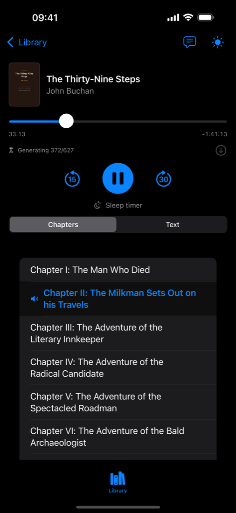
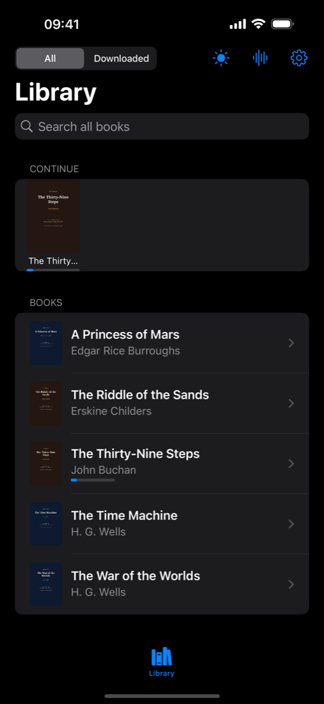
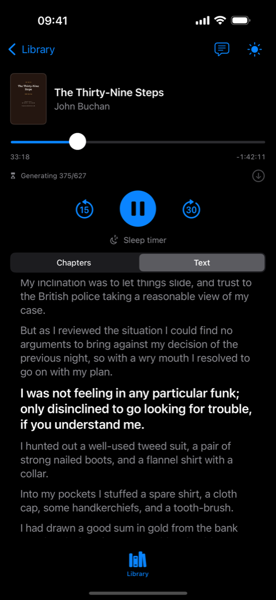
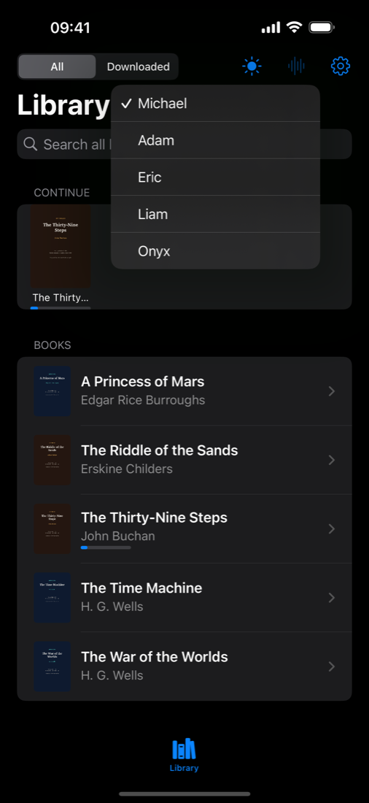
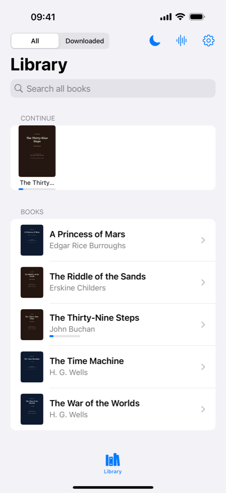

Your audiobook starts playing while your Mac is still making it.
PocketBooks turns the PDFs on your own Mac into spoken audiobooks and streams them to your iPhone as they are generated. No cloud. No account. No upload.
Requires a Mac. Free and open source, AGPL-3.0.

The difference
Six hours of work. Under a minute of waiting.
in under a minute Generation continues
another ~6 h 41 min
Chunked synthesis feeds a growing HLS stream, so playback can begin as soon as the first segments exist. Measured on an M2 Pro: Pocket TTS generates about 3–5× faster than you can listen, on the CPU alone.
What you get
An audiobook player for your own digital books.
Your library, not a catalogue
Drop PDFs in a folder on your Mac. Each book is identified by its content hash, so renaming or moving it never loses your place.
Read along while you listen
A synchronised transcript highlights the sentence being spoken. Tap any line to jump straight to it.
Real chapters
Chapter marks come from the PDF outline. Front matter, dedications and copyright pages are skipped.
Six built-in voices
No voice cloning needed.
Resume anywhere
Your position is stored per book on your own server and syncs between your devices.
Offline when it's done
The finished book is assembled into a tagged M4B with cover art and chapter marks.
The app
Five screens, no menus to learn.




Setup
Three steps, one evening.
Install the server
One clone, one virtualenv, one command on your Mac.
pip install -r requirements.txt
python -m app.serveAdd books
Drop your own PDFs into ~/Audiobooks/PDFs, or run one command to get five public-domain classics to start with.
python -m app.samplesListen
Build the iPhone app once, enter your server address and token, pick a book. Playback starts long before generation finishes.
xcodegen generate
open PocketBooks.xcodeprojIncluded
PocketBooks ships no books. It ships five that nobody owns.
Science fiction
The War of the Worlds
Science fiction
The Time Machine
Science fiction
A Princess of Mars
Spy thriller
The Thirty-Nine Steps
Spy thriller
The Riddle of the Sands
Public domain in both the United States and the European Union. The provenance of every title is documented in the repository.
Privacy
Nothing leaves your Mac.
Your PDFs, the prepared text and the generated audio stay on your own hardware. The app talks to exactly one host: the server address you type in. There is no analytics, no telemetry and no third-party network call — this page itself loads nothing from anywhere else. The API is protected by a bearer token and is meant for your home network or your Tailscale tailnet.
Questions
The honest answers.
Do I need a Mac?
Yes. Generation runs on your Mac's CPU, no GPU needed. The iPhone app is only the player.
Is it in the App Store?
Not yet. The server is on GitHub today and the app is heading for TestFlight first.
Can I publish the app myself?
Yes. Everything is open and free under AGPL-3.0 — build it, change it, ship it under your own name. You need your own Apple Developer account and your own bundle identifier, and the licence asks you to publish your changes in return. The whole path is written up in the repository.
Does it work with my own books?
Any PDF with a real text layer. Scanned, image-only PDFs are rejected rather than guessed at. Only process books you are allowed to process.
Does it clone voices?
No. It uses six built-in, openly licensed voices and has no cloning feature.
How long does a book take?
On an M2 Pro, roughly 3 to 5 times faster than listening: a four-hour book is finished in about one to one and a half hours. You start listening in under a minute either way.
What does it cost?
Nothing. It is open source under AGPL-3.0.